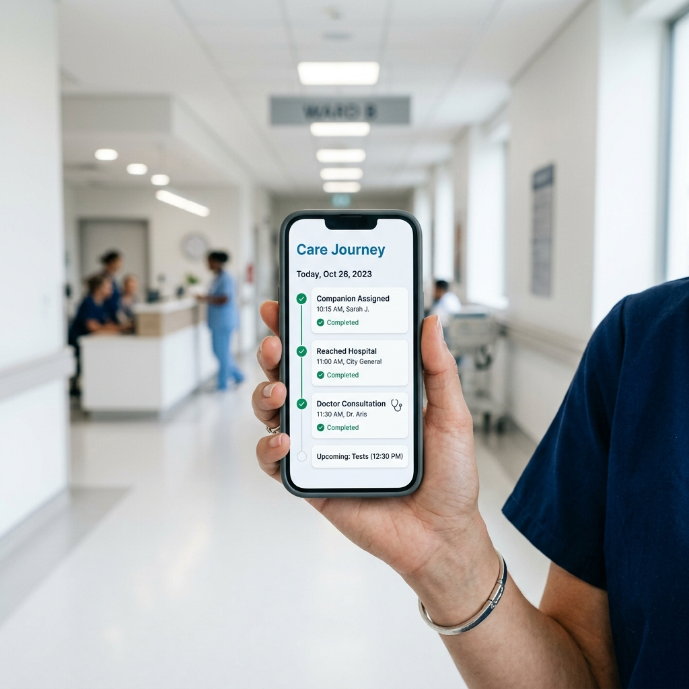

Hospital companions for today or later
Get trusted hospital help without leaving your day.
Choose urgent assistance for a hospital visit today, or schedule a verified companion for an upcoming appointment, test, or follow-up.
Compassionate Care in Action
A friend at the hospital when you can't be there.
Caresy companions do more than just stand in queues. They provide emotional support, aid patient mobility, keep detailed notes of doctor instructions, and ensure your loved ones are cared for like family.

Start where you are
Most families have one of two needs.
So Caresy should not force everyone through the same long path.
Use the short urgent form.
Best when the hospital visit is already happening or scheduled within the next 24 hours.
Response Time: Average call-back in 6 minutes, companion dispatch within 45 minutes.
Book for laterUse the full appointment form.
Best when you already know the hospital, date, doctor, department, and patient requirements.
Response Time: Companion profile shared 12 hours before the scheduled appointment.
Live Updates Demo
Follow their hospital journey live.
People book Caresy not as a mere chore runner, but to ensure someone they love is never left alone. Follow along with our 4-stage live update simulator to see how we keep you connected.

Priya Sharma
Aadhaar & Police Verified
Priya is verified, trained, and currently 2.8 km away from Ramesh's home. She is coordinating language preference (Hindi/English) and travel requirements.
Apollo Hospitals
Cardiology Department
Priya and Ramesh have arrived safely at the hospital. Priya has navigated the main registration counter, collected the billing token (A-42), and guided Ramesh to the Cardiology waiting lounge.
Consultation Room 4
Dr. Mehta (Cardiologist)
Ramesh is seeing Dr. Mehta. Priya is inside the room with him, taking detailed notes on dosage instructions and recording the next follow-up date (July 21) as directed by the family.
Pharmacy Counter 2
Discharge & Medicines
Priya has uploaded the doctor's prescription slip for family reference, stood in the pharmacy queue to collect the prescribed heart medicines, verified the count, and is escorting Ramesh back home.

Real-time Visibility
Always know what's happening at the hospital.
No more guessing games. Our companion logs updates directly into the Caresy care timeline as milestones are met. You see exactly when registration completes, when the patient enters the consultation room, and when medicines are collected.
Real Stories
What families say about Caresy.
"Priya was an absolute godsend. She waited with my father for 3 hours at Apollo and sent me updates every time he moved. I could work without panicking."
Delhi NCR
"I live in the US and it’s always stressful when mom has to go for checkups. Anil managed everything, including getting her medicines from the pharmacy."
San Francisco, CA
"The live updates feature is what sets Caresy apart. Knowing exactly which stage of the consultation my wife was in gave me immense peace of mind."
Bengaluru
Ready when family cannot attend
Choose the path that matches your situation.
Same-day requests stay short. Planned appointments collect the details operations needs.